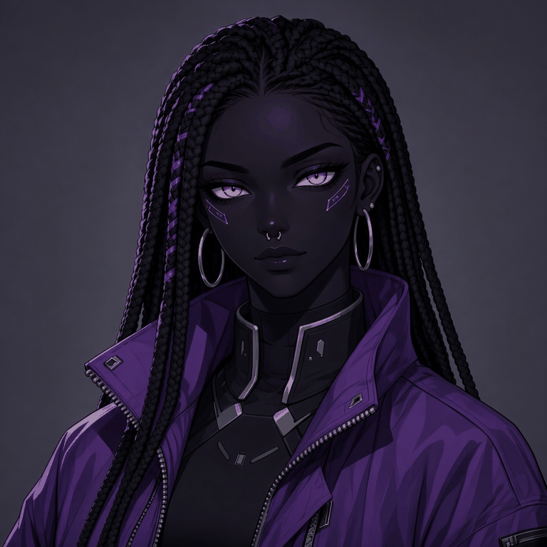

The Neon Vigil encyclopedia — characters, creatures, and the Living Line tribes.
Characters
Neon Ultra
Neon Ultra, a time displaced DJ.

Alyha
Anya
Cali Rose
Cyphr
Erica Mar
Hexa
HimHun
Indigo
Jade
Nexus
Noor
Praxia
Star
Val 17
Val 18
Xavier
Xero
Creature Log
The Garden's creatures — bug castes, fauna, and flora. Only Praxia commands the Garden this season. Always a Queen in law.
Bug Castes
Sentient distributed intelligences. Harmonious with Garden. Low-frequency song / scent. Bioluminescent. No sigils on the Bugs. Bugs never use plasma.
SWARM[BUG CASTE]
Rust-red / gunmetal, ember eyes (base beetle-beast).
ASSASSIN[BUG CASTE]
Reduviid browns, blacks, dull amber; ember or dark compound eyes. Especially evolved hunters: elongated head, curved rostrum, raptorial forelegs. Ambush, pierce, reel.
PARASITE WASP[BUG CASTE]
Metallic blue (cuckoo / mud-dauber blue), dark wings, ember or blue-glass eyes. Smaller animalistic wasp-beast. Mind-control is biological: sting / ovipositor + song-line infection through a living host. Host walks. Wasp rides. Follows Praxia until succession.
Swarm, Assassin, and Parasite Wasp are smaller, mostly animalistic — insect-beast bodies, not human-height soldiers. All castes follow the Queen's order until succession.
Garden Fauna
SPIRIT FAUNA[FAUNA]
Bacteria and other microbes run slightly bigger than Old World scale. Sometimes visible, hovering and floating through the Garden. Translucent motes, slow flagella, faint biolume. Coin-to-palm at closest. Weather, not combat. First Water is their air.
STINGLESS GARDEN BEES[FAUNA]
Bird-sized (robin to raven, not condor). Fuzzy bumble-body language. Stingless. Translucent to honey-glass chitin, faint Garden lumen. They move pollen, resin, and song-dust through the canopy.
NIGHT MOTHS[FAUNA]
Same scale as the bees. Soft powder wings, dusk-to-black with pale eyespots. Silent. No sting. Night shift of the same air-layer.
SEA SHEEP[FAUNA]
Sap-sucking sea slugs, the size of actual sheep. Kleptoplasty: they steal intact chloroplasts from algae and keep them in the cerata on their backs; when food runs out they photosynthesize like plants. Gentle, harmless grazers drifting the tide pools and shallow First Water edges.
WORMS[FAUNA]
Human-scale predatory worms, sandworm / bloodworm / clamworm lineage grown large. Segmented bodies, copper-hard teeth or zinc fangs, venomous saliva. Ambush predators in Garden soil and ruin-loam.
ROOSTWING SERPENT[FAUNA]
A flying snake. Giraffe-sized, just big enough to swallow a full-grown human. Roosts high; flies.
URSA QUILL[FAUNA]
Iron City / Iron Fortress eternal winter. White ursine — polar bear + armadillo + wolverine. Red eyes. Glass-white quills. Non-humanoid. Not Swarm. Not a Queen.
Ocean Fauna
PAKARI SHALLOWS[FAUNA]
Nine-tail Garden fox of the First Water edge. Two bodies, one animal. Low form: raccoon-to-hound, tide-pools, cyan inner-light, nine thin wet tails. High form: large night-fox, tails become weather.
VEIN-LEVIATHAN (AMNION WHALE)[FAUNA]
Garden whale. City-block to small hull-shadow. Silk baleen combs spirit-fauna. Filter-song. Surfaces under Six.
GEO-TRENCH CATHEDRAL CLAM[FAUNA]
Living Filter Clam grown huge. Chitin-nacre valves, magma-red resin hinge, First Water held in the mantle cavity. An animal.
CHOIR-STRING (SIPHON LINE)[FAUNA]
Colony animal. Lamp-post thin, longer than Old World blue whale. Glass-teal zooids. Caste in the water (float / sting / feed / sing).
HOOK-RAY[FAUNA]
Pilus-law skate. Skiff to barge. Ventral bio-grapples. Cannot hold chrome.
ROSTRUM EEL[FAUNA]
Assassin logic in water. Old World six-foot eel is the juvenile. Adults coach-to-bus. Baths tunnels, open clam valves, trench dark.
Plants
All are natural in the Gigas Garden, not synthetic, not engineered.
LUNGWOOD[FLORA]
Canopy tree, trunk inhales / exhales, breath rhythm changes before storms / swarm moves / First Water shifts.
THORN-SHOOTER THICKET[FLORA]
Thorns fire on vibration; effect: pain, numbness, then sleep, slow-acting, unless dose repeated.
PULSE LANTERN VINE[FLORA]
Hanging lanterns pink / blue / purple / white, pulsing, reaching toward warmth not grabbing; a cut lantern glows one night.
EMBER BUSH[FLORA]
Glowing pollinators burst out like light when disturbed, then settle; living alarm.
MAW CAP[FLORA]
Closes slowly, eats what stays still inside too long.
SIGNAL FLOWER[FLORA]
Orb bud twinkles long / short patterns changing with water, Bug song-lines, First Water in soil; living telegraph.
VEIL MOSS / MYCELIAL MAT[FLORA]
Toned-down glow; mycelium is the bioluminescent element, not the moss; path / camp floor for all Garden tribes, no single tribe owns it.
QUEEN'S BLOOM[FLORA]
Queen's Bloom 5147, with Infinity 6 as distant overhead silhouette (not landed).
STRELITZIA GIGAS[FLORA]
Petals snap on 2 and 4 at 124 BPM.
FIRST PLANTS / LITHOPS[FLORA]
First Plants / Lithops nodules / magma-red resin.
Slime Sisters & Mother Slime
SLIME SISTERS[CREATURE]
Gigas Garden creature.
MOTHER SLIME[CREATURE]
Gigas Garden creature.
Living Line Tribes
Living Line is the term for Bio Humans. What they call themselves is Mimekh, "people of the high branches."
AMNION KEEPERS[TRIBE]
Living Line tribe.
IRON ROOT[TRIBE]
Living Line tribe.
SALT-BORN[TRIBE]
Living Line tribe.
SKY-BONE[TRIBE]
Sky Bone is the name in the Living Line list and the name outsiders use; Mimekh is their own self-name.
THE TRAVELING[TRIBE]
Garden-born. Ceremonial; bioluminescent patches; elders carry staves, kneel, and stop at the tree line — they will not set foot on the Curipira's ground. Their self-name is not "travellers" but the traveling itself, the act as identity; in their tongue, spelled phonetically: Loh biazhando. Dissent within the tribe: those who believe in magic — the old ways, the Garden's song — against those who want to wield the technology of the past to protect their future. Scout / hunter caste ranges past the tree line where the elders refuse to go. Material culture: bug shells as armor; they use many of the local animals for their own purposes; no buildings or infrastructure — they travel and set up camps, using animal skin and garden vines as rope. They paint their bioluminescent markings with ink from weird squids, carried dead as ink pouches. Language: Spanish base, Portuguese, English, Mexican slang. Migration: Brazil northward after the Fall, surviving by moving and natural births, up until 5150.
DISPOSSESSED[TRIBE]
Ancient relic cyborgs who have persisted three thousand years, for whatever reason. Their implants are long dead; they wear the husks. They cannot enter First Water. Their weapons are stolen or scavenged, and many of them do not even know how to use them.